London Royal American Football Club
Graphic Design graduate thesis for Maryland Institute College of Art.
The London Royal American Football Club is a National Football League expansion team based in London, England.
It is an exploration of brand identity through sport. Royal is not simply a collection of logos, colors, and uniforms, but the culmination of hours of research and iteration.
TypeCon
Print Design Final Project for Maryland Institute College of Art.
TypeCon is a rebrand of the popular annual typography conference, held in a different city each year. Set in the city of Messina, Sicily, with its rich multicultural history, the design is based on the concept of collegare — Italian for connect.
The custom logo type was created with unorthodox ligatures and tails, and the design includes patterns and colors that emphaisze the theme of connection, as well as the mediterranean setting.
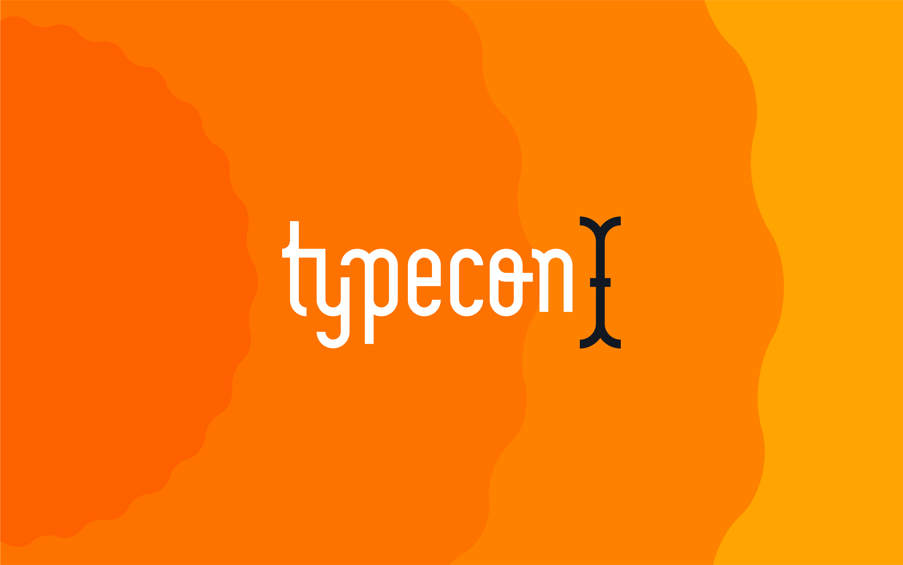
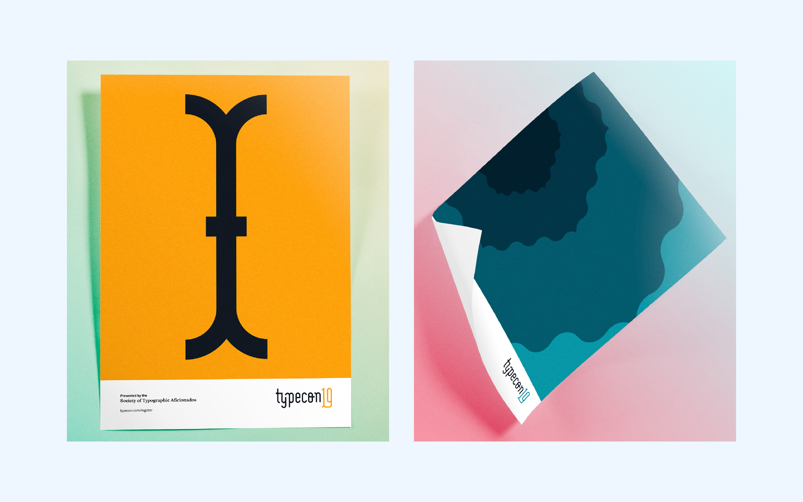
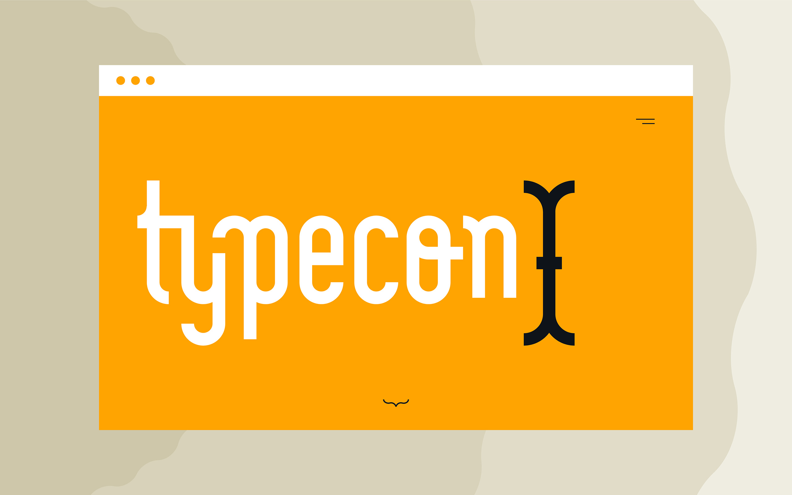
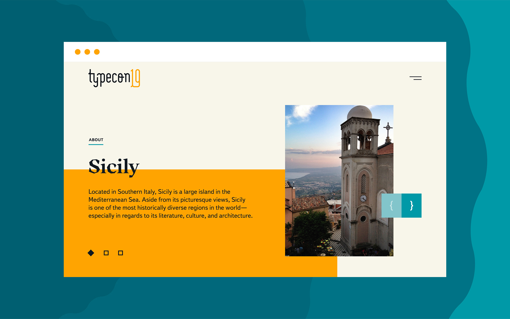
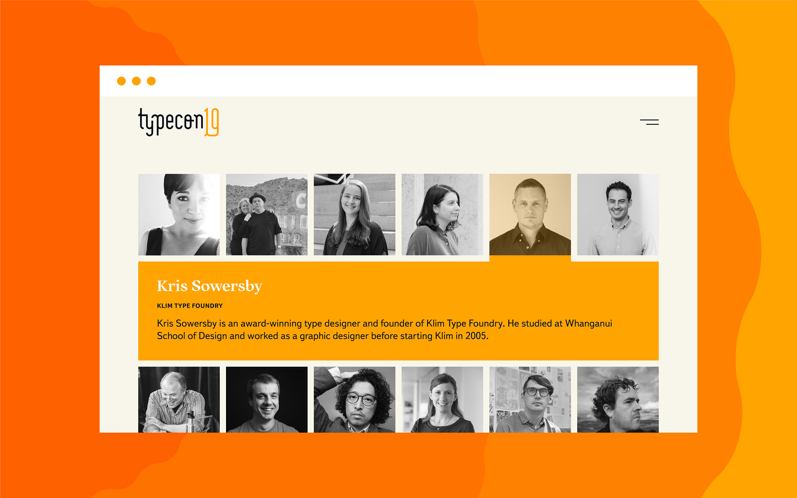
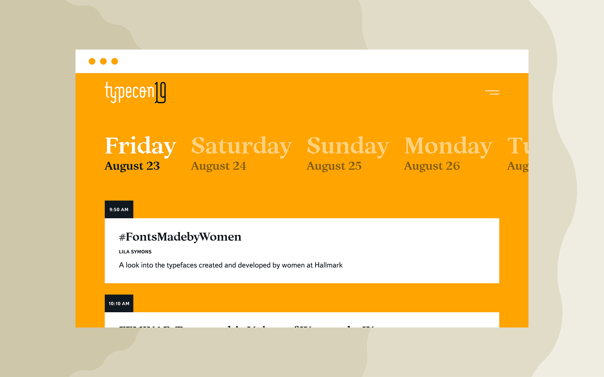
 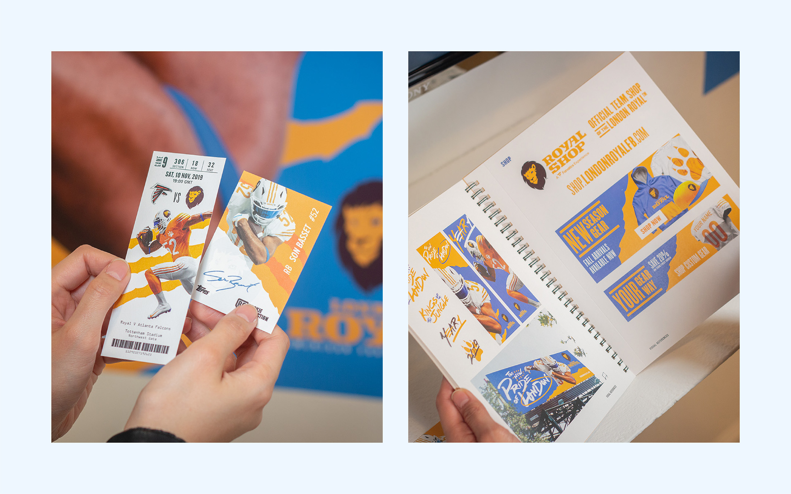
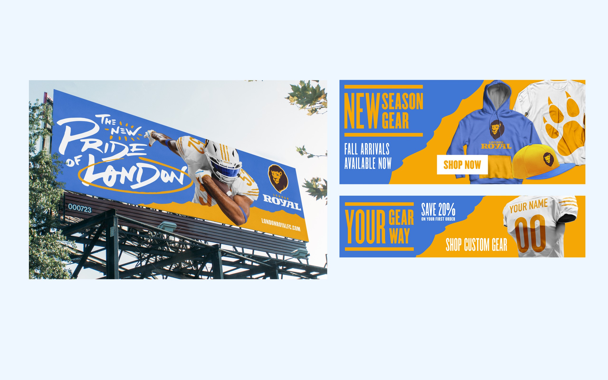
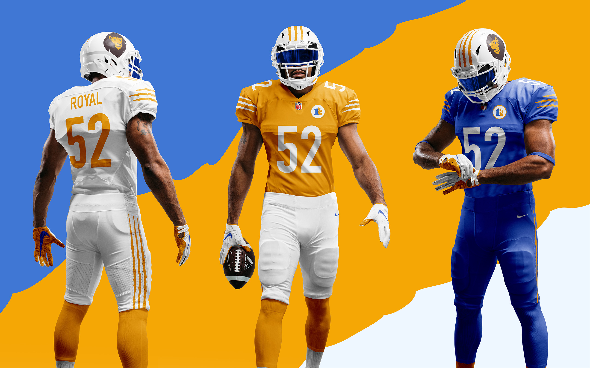
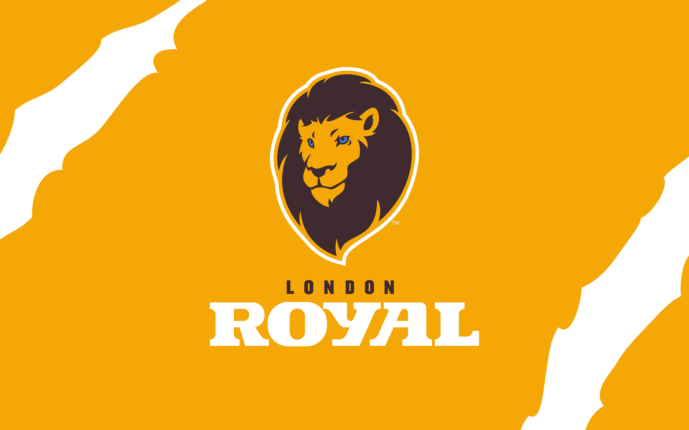
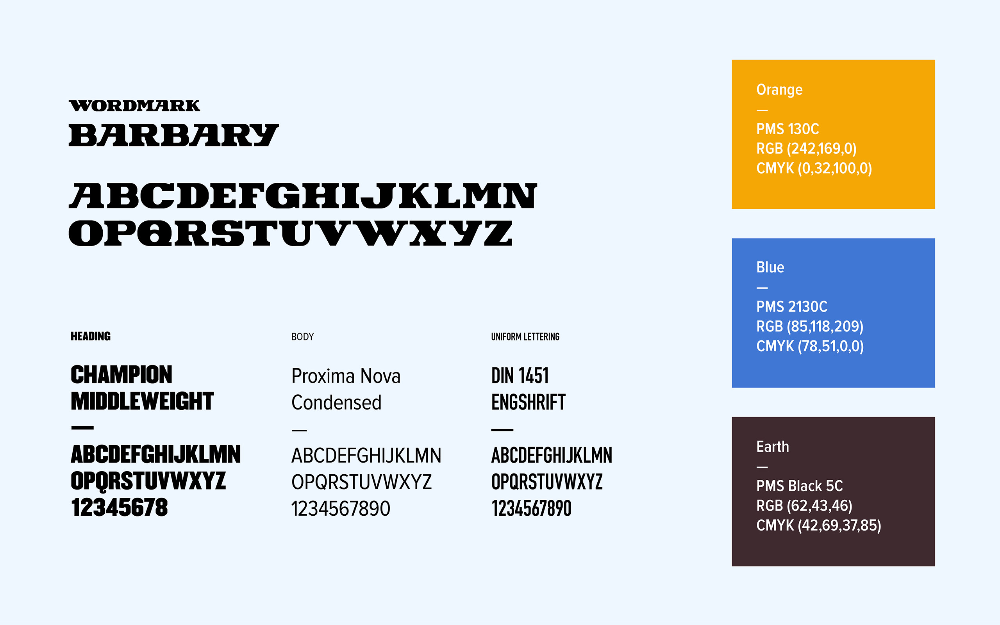
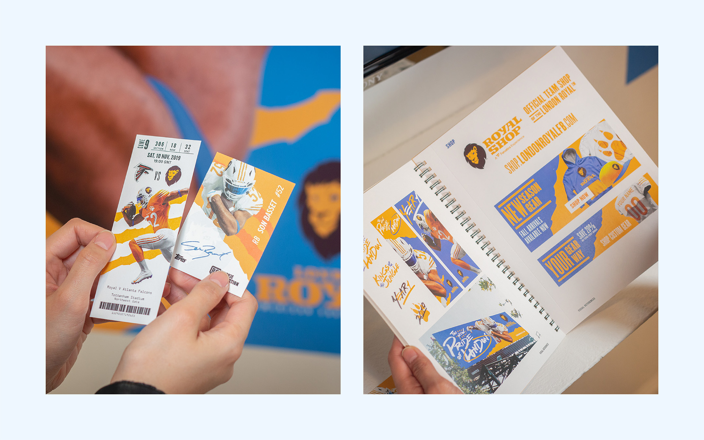
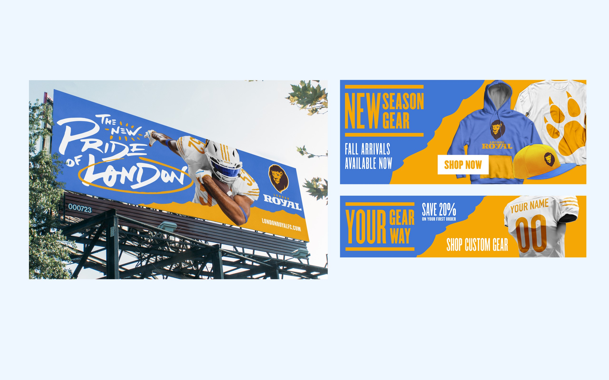
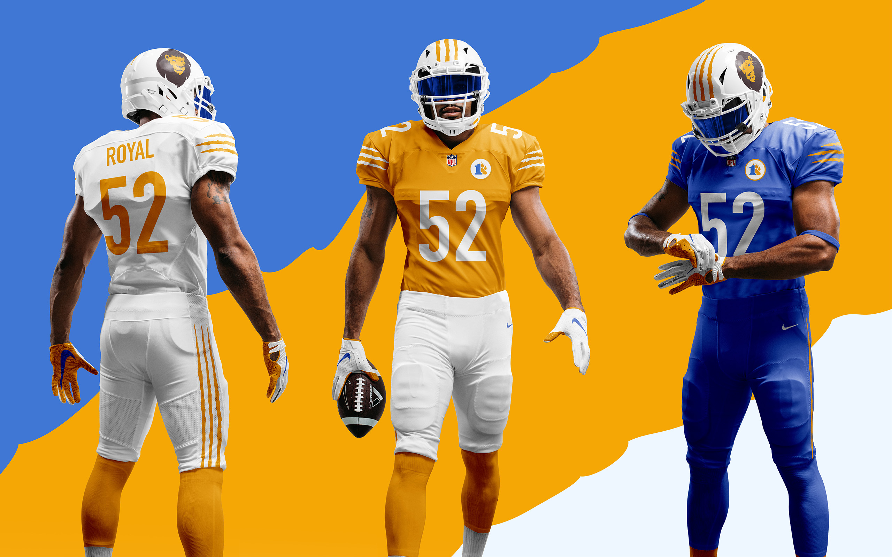
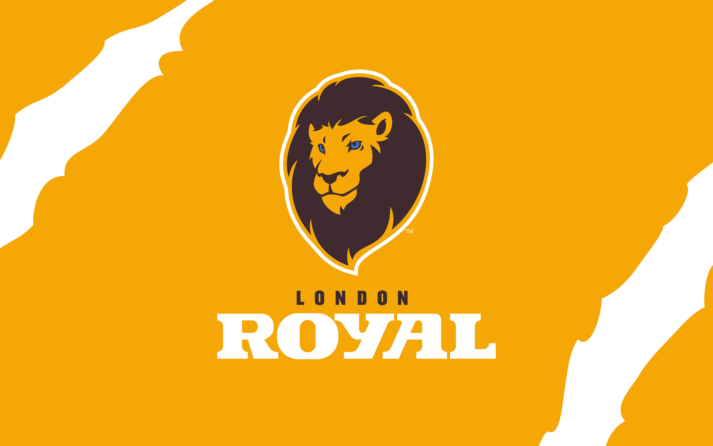
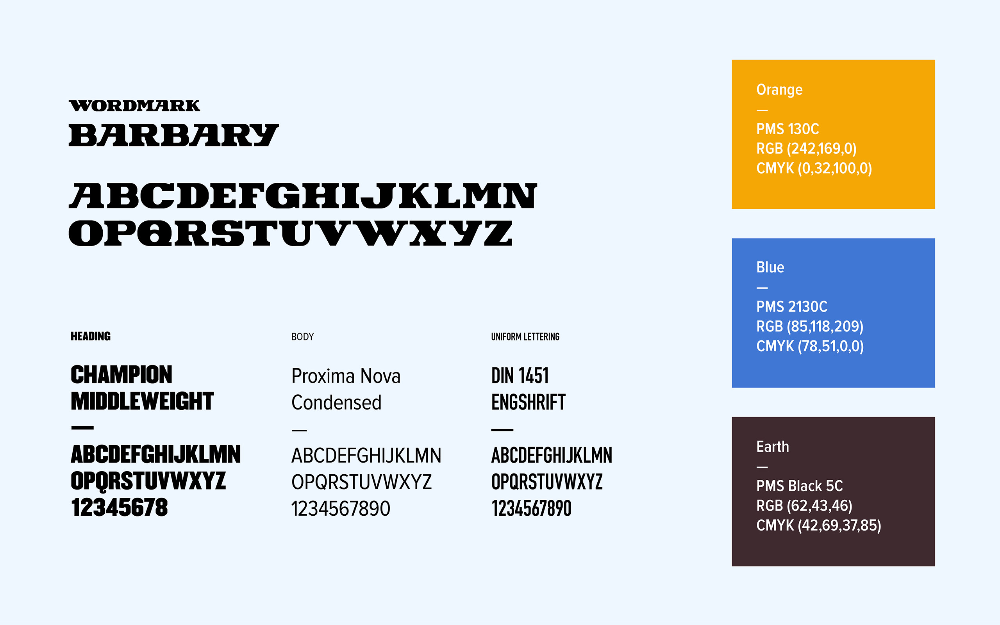